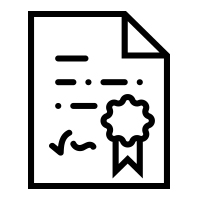
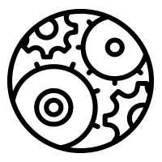
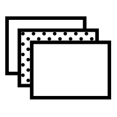
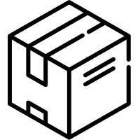

熱泵冷凝乾燥技術
原理簡介
熱泵是一種高效率的能源轉換裝置，相較於其他能源相比，可以用較少的電力達到冷凝乾燥的效果，節能又環保。
且熱泵具備多種不同應用方式，可為不同產業提供各種能源方案。
高品質的熱泵系統
二方企業擁有專業淨水與空汙處理背景，及投入專業冷凍空調技術，開發出一系列熱泵相關產品，如熱泵乾燥機、熱泵升溫加熱系統等。 本公司產品除了有一般熱泵的節能省電的優點之外，更擁有以下優勢：
-

高效穩定的熱泵系統
投入冷凍空調設計技術，系統理論均經過科學化參數設計與多次嚴謹計算，運轉工況較一般熱泵系統更穩定節能。
-
高信賴度控制技術
電子科技業等級軟體控制技術，能將系統更簡單整合，系統更不容易故障。 除此操作也非常簡單方便，為產品打造更具信賴性的控制系統。
-

環工級機構技術
以環工級機械設計的經驗，獨家設計出多項專利設計機構，可確保設備密閉性不排放廢氣。 並擁有耐腐蝕技術，系統不易損壞，設備運轉壽命更長。
-
3D設計，維修更方便
二方致力於打造高品質機體設計，設備均以3D模組化設計，經過多項模擬計算，不只硬體結構穩定、能大幅縮短施工時間，設備損壞時也能迅速的進行維修服務。
-

模組化製品
高成熟度模組化的製品開發技術，讓系統可彈性應用於各種產業與用途、減少現場組裝時間、並節省生產製造或維修的成本。
-

佔地面積小
採用緊湊的機構設計，不浪費各部品之間的空間，最小化設備占地面積。 汙泥乾燥機系列為密閉式循環，免附設環保裝置，推薦給想節省寶貴佔地面積的貴公司。
售後服務
保固、保養、檢修等相關服務
本公司設備均有基本的保固服務。 也有保養、檢修、提供維修備品等服務，如有需要請聯絡我們。